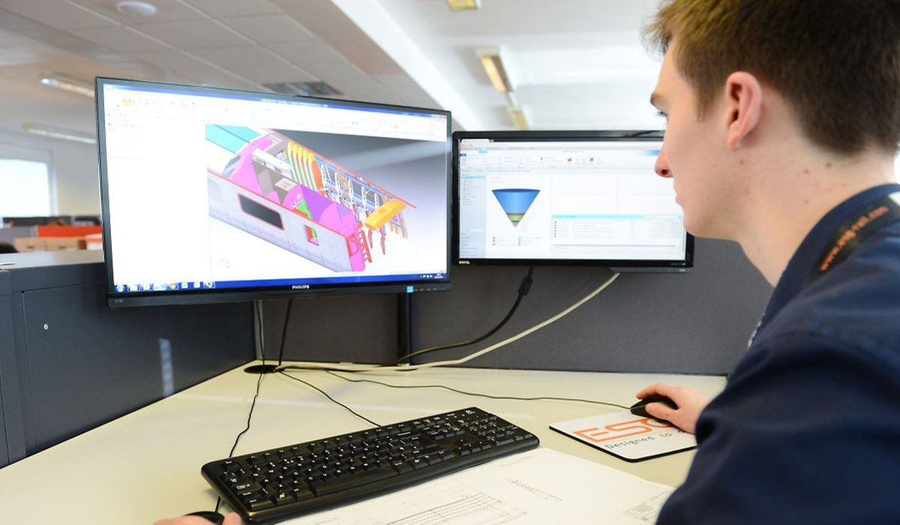

En bref
Oui, on peut étudier le jeu vidéo ou l’animation 3D sans se ruiner, à condition de choisir entre l’école publique, l’université et l’alternance. Les écoles publiques et les universités ne demandent que des frais d’inscription, mais recrutent souvent à bac+3. L’alternance fait financer la scolarité par l’entreprise et rémunère l’étudiant, en général sur les deux dernières années.
- Il n’existe pas d’école de jeu vidéo post-bac gratuite reconnue par les studios
- Les écoles publiques du jeu et de l’image recrutent surtout au niveau master, après une licence
- En alternance, la formation est financée par l’entreprise et son opérateur de compétences, et l’étudiant touche un salaire
- Les bourses du Crous ne s’appliquent qu’aux formations habilitées, la liste se vérifie chaque année
Sommaire de ce guide
Pourquoi les études de jeu vidéo coûtent si cher
Une salle de 25 postes équipés de cartes graphiques, des licences de logiciels professionnels, des intervenants venus des studios. Une école privée de jeu vidéo ou d’animation coûte cher à faire tourner, et la facture dépasse souvent 8 000 € par an pour les familles.
Bonne nouvelle, il existe des chemins moins coûteux. Mauvaise nouvelle, aucun n’est un raccourci.
Les six options comparées
| Option | Note /10 | Coût pour l’étudiant | Niveau d’entrée | Sélection | Pour qui |
|---|---|---|---|---|---|
| Alternance en fin de cursusNotre choix | 8,2 | Rémunéré | Bac+3 | Trouver un studio | Les profils déjà solides |
| École publique du jeu ou de l’image | 8,0 | Frais universitaires | Bac+3 en général | Très forte | Les excellents dossiers |
| Licence universitaire puis master | 7,3 | Frais universitaires | Bac | Modérée | Les profils qui veulent du temps |
| Apprentissage dès le début | 7,1 | Rémunéré | Bac | Places très rares | Les profils déjà orientés |
| Bourse sur critères sociaux | 6,9 | Frais réduits | Selon la formation | Critères sociaux | Les familles modestes |
| Autodidacte et formations en ligne | 5,6 | Faible | Aucun | Aucune | Les programmeurs très autonomes |
Notes Comparécoles de novembre 2026, pondérées par le coût réel et l’accès à l’emploi.
L’alternance arrive en tête parce qu’elle combine trois avantages, une formation payée, un salaire et une première expérience en studio sur le CV. Son seul défaut est de demander un niveau déjà solide, la plupart des écoles ne l’ouvrent qu’en 4e ou 5e année.
Les écoles publiques, gratuites mais très sélectives
Les écoles publiques du jeu vidéo et de l’image ne demandent que les frais d’inscription universitaires. En contrepartie, elles recrutent peu, souvent au niveau master, et sur concours.
- Le master jeu vidéo public le plus connu recrute après une licence, en informatique, en arts ou en design
- Les universités proposent des licences en arts numériques ou en informatique, une bonne base pour viser ensuite un master spécialisé
- Les écoles publiques de l’image et du son passent par des concours où le taux d’admission reste très bas
Le public n’est pas une solution de repli. C’est une voie d’excellence, avec ses propres règles, et un an de préparation n’y est jamais de trop.
L’alternance, la vraie économie
En alternance, l’étudiant signe un contrat d’apprentissage ou de professionnalisation avec un studio. L’entreprise et son opérateur de compétences prennent en charge la formation, l’étudiant touche un salaire calculé en pourcentage du Smic.
| Cursus de 5 ans | Années payées par la famille | Années en alternance | Ce qui change |
|---|---|---|---|
| Alternance en 4e et 5e années | 3 | 2 | Deux années de frais en moins et un salaire |
| Alternance en 5e année seulement | 4 | 1 | Une année économisée |
| Sans alternance | 5 | 0 | Facture complète |
Schéma type d’un cursus de cinq ans en école privée de jeu vidéo ou d’animation.

Avant de choisir une école, demandez à partir de quelle année l’alternance est possible. C’est la question qui fait varier le coût total de plusieurs milliers d’euros, bien plus que l’écart de frais affiché d’une école à l’autre.
Comment choisir selon votre situation
Si votre dossier scolaire est excellent
Visez une licence solide puis un master public, en préparant le concours dès la deuxième année.
Si vous voulez entrer vite dans le métier
Choisissez une école reconnue qui ouvre l’alternance le plus tôt possible dans le cursus.
Si vous êtes boursier
Vérifiez que la formation est habilitée à recevoir des boursiers avant de candidater, la liste change chaque année.
Notre verdict
On peut étudier le jeu vidéo ou l’animation 3D sans se ruiner, mais pas sans effort. L’alternance en fin de cursus est la meilleure option pour la plupart des étudiants, les écoles publiques la meilleure pour les dossiers excellents.
Si votre priorité est le coût total, comparez les années d’alternance avant les frais annuels. Si votre priorité est la gratuité, préparez une licence puis un concours.
Questions fréquentes
Existe-t-il une école de jeu vidéo gratuite ?
Il n’existe pas d’école de jeu vidéo post-bac gratuite reconnue par les studios. Les options les moins chères sont les écoles publiques, qui recrutent surtout au niveau master, et l’alternance, qui fait financer la formation par l’entreprise.
Peut-on faire une école de jeu vidéo en alternance ?
Oui, la plupart des écoles reconnues ouvrent l’alternance en fin de cursus, souvent en 4e et 5e année. L’entreprise finance alors la formation et l’étudiant est rémunéré.
Combien gagne un alternant dans le jeu vidéo ?
Un apprenti touche un pourcentage du Smic qui dépend de son âge et de son année de contrat, de 53 % à 100 % du Smic pour un étudiant de plus de 21 ans.
Les écoles privées de jeu vidéo acceptent-elles les boursiers ?
Seulement celles dont les formations sont habilitées à recevoir des boursiers du Crous. Il faut le vérifier formation par formation, chaque année.
Peut-on se former à l’IA seul et éviter une école de jeu vidéo ?
Pour la programmation, un autodidacte très autonome peut percer avec un portfolio solide. Pour le game design, l’art ou l’animation, les studios recrutent très majoritairement des diplômés, et l’IA ne remplace pas trois ans de projets en équipe.
Notre méthode
Ce comparatif repose sur des données publiques, vérifiables une par une.
- Les frais de scolarité sont relevés sur les pages tarifs des écoles, pour l’année 2027-2028 quand elle est publiée
- Les diplômes sont vérifiés au Répertoire national des certifications professionnelles et auprès de la CTI
- Les taux d’insertion sont ceux que les écoles publient, avec les promotions concernées
- Les classements cités sont ceux de GAMEducation, du Figaro Étudiant, de The Rookies et d’Animation Career Review
- Les avis d’étudiants et de diplômés proviennent des forums d’orientation et des plateformes d’avis vérifiés